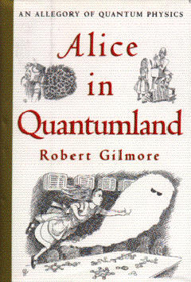

Alice in Quantumlandby Robert Gilmore
publisher: Springer-Verlag
Fiction (?), 180 pages | 
(book cover art, Copyright ©1995 Springer-Verlag)
Used with Permission. |
Return to the Book MenuPrevious|Next
Description:
It literally is Alice in Wonderland meets "quantum mechanics."
A very strange look at the very strange behavior that happens when we enter
the quantum realm of the very small. Quantum mechanics is renowned for
defying intuition; this book may provide some new insight to what goes
on when physics gets weird.
Recommended for: Future physics, chemistry, or chemical
engineering majors; people who like a bit of the bizarre; people who wonder... but it is not a book for people looking for the shortest book they can get away with reading!
Note: Do not read this as you would read a textbook! We do not
expect you to pick up on every single detail, or even every discussion.
However, many of the topics covered should look familiar.
Did-you-read questions:
Deadline: February 1, 2005.
These should be easy questions, but you should have the questions ready and keep an eye out during your reading. Each question should be answered with 1-2 sentences.
Note: these questions are not probably not the most important part of the book! Your essay will not have to cover these questions!
- What happens to electrons when Alice asks them to stop so she can see them?
- What is the currency at Heisenberg's Bank?
- Who are the four presenters at the Copenhagen School?
- What kind of well does Alice fall into?
- What three things pass through the coulomb barrier?
Report Questions:Deadline: Peer Review Session on February 8, 2005; paper due February 10, 2005.
You should write a 3 - 4 page essay on one of the following questions. Your essay should include examples and references to the book, unless otherwise specified. Page number references are sufficient for citing material from the primary book. If you use outside materials, cite your sources in full. If you would rather write on a different topic, you may, but clear it with Mr. Howe or Ms. Sullivan first.
- What idea or ideas did you recognize from physics or chemistry that
you have seen so far? Did you find contradictions or discover new aspects
of these ideas?
- Is the presentation of these complicated ideas as parables from wonderland
effective? In other words, did the Alice imagery help you visualize the
situations that show up in quantum mechanics? Give examples.
- It is pretty likely that this book will leave you with some questions.
Pick one or more situations that you feel that you can write about, and
describe your interpretation of what is happening, as well as where you
feel there are holes in your understanding.
- Do you think Lewis Carroll would have liked this book? Justify your answer.
Graphic and Presentation:
Deadline: February 21 - March 3, 2005.You will give a 10 minute presentation on both of the following:
- Convince your peers that they should (or should not) read this book. (This may include a brief summary of the book.) Give examples of what was cool or worthwhile in the book, and what you got out of it (or didn't).
- Describe a (realistic) science idea that you learned about in this book, citing information from at least 2 external sources (other than the dictionary). If you would like help choosing or understanding an idea from your book, you are invited to come talk to Mr. Howe or Ms. Sullivan.
Note: This presentation should not be just a reading of your paper!Along with this presentation, you should have a graphic that will go with it. A Power Point presentation is recommended, but if you have a special idea for a something else, such as a model, an original video presentation, or a well done drawing/ painting/ sculpture/ etc., you may do so, provided it involves a similar level of effort and polish. Speak to Mr. Howe or Ms. Sullivan first if you are considering an alternate graphic format to the Power Point.
Return to the Book MenuPrevious|Next